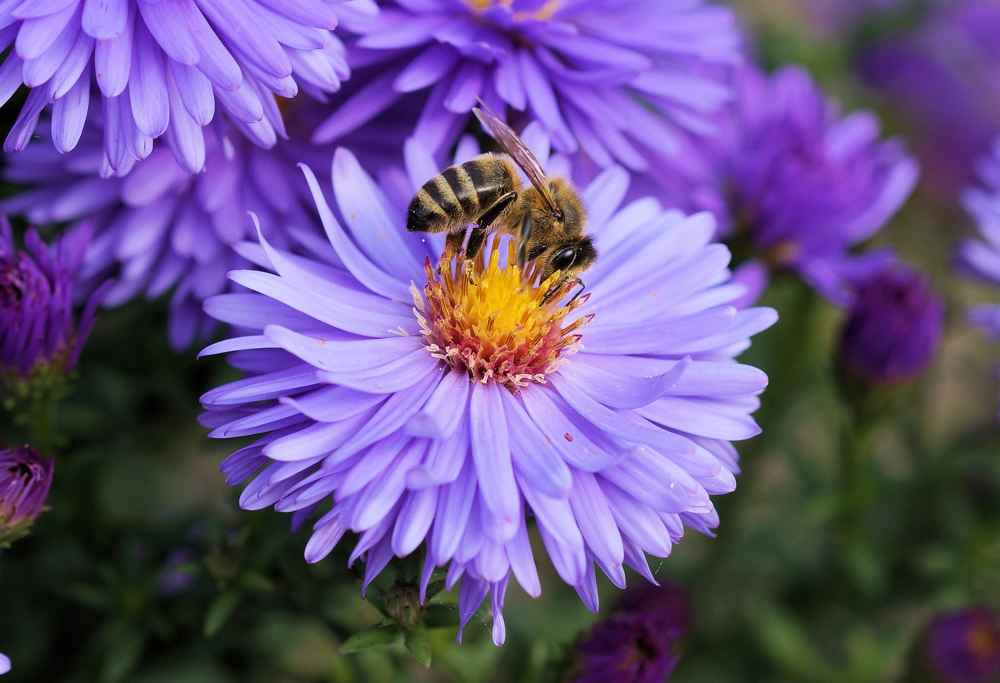
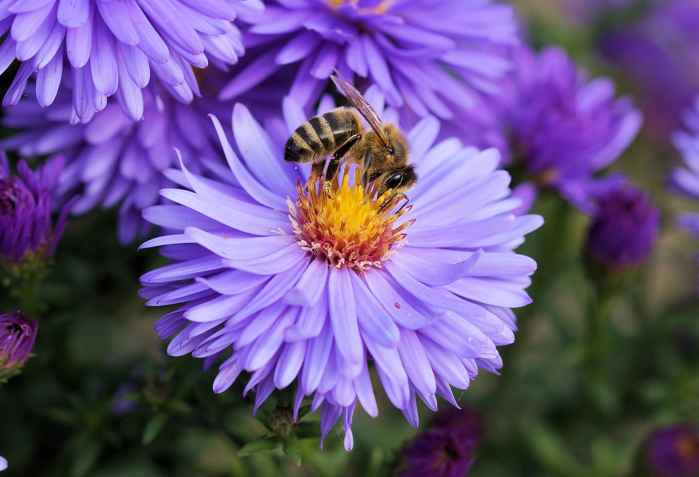

Plant research in space focuses on understanding how microgravity affects plant growth, development, and reproduction.
Studies have shown that plants can grow in space, but they exhibit altered growth patterns and changes in gene expression.
This research is crucial for developing life support systems for long-term space missions, as plants can provide food, oxygen, and water recycling.
Scientists are also investigating how space conditions impact plant-microbe interactions, which are essential for plant health.
These studies help us understand how to optimize crop production in space environments.
Animal studies in space aim to understand how microgravity and space radiation affect living organisms.
Research involving model organisms such as mice, fruit flies, and zebrafish provides insights into physiological changes, genetic expression, and developmental processes.
These studies have revealed effects such as muscle atrophy, bone density loss, and immune system alterations.
Understanding these impacts is vital for ensuring the health and safety of astronauts on long-duration missions.
Animal research also contributes to developing countermeasures and medical treatments for space-induced health issues.
Interactive media in space research involves the use of virtual reality (VR) and augmented reality (AR) technologies to simulate space environments and conduct experiments.
These tools help researchers visualize data, train astronauts, and engage the public in space science.
VR and AR are used to create immersive simulations that replicate the conditions of space missions, allowing for better preparation and planning.
Additionally, interactive media can enhance educational outreach by providing virtual experiences of space, making the science more accessible and engaging for students and enthusiasts.
 
